Strava tracks analysis in R
Contents
I like to run and ride a bike. I use Endomondo or Strava to write down GPS-tracks of my trainings and despite their commercial analytic capabilities are quite advanced as long as I know R it is compelling to use it to dissect my training data. Below I will tell how I do that.
Libraries
1. We will need special package XML2 to load data in the XLM formats, the package geosphere to calculate distances on Earth’s surface and the set of packages to draw tracks on Google Maps.
#Common packages
library(data.table)
library(lubridate)
library(ggplot2)
library(xml2)
#Package for geosphere calculations
library(geosphere)
#Packages for grawing maps
library(raster)
library(Imap)
library(ggmap)
Data loading
2. Usually two formats are used to pack run/bike track data: TCX (is used by Endomondo) and GPX (Garmin, Strava).
To load data in these formats I defined two functions. Both of them use the package XML2 to parse XML structures. This package uses XPath language queries to look for graph nodes and to get information from them. The following rule applies: if an XPath string is started with ‘\\’ then these functions do global search in all parts of the document over wise they do search only within the chosen node.
The following functions are used:
xml_ns_strip()cleans the document from the default namespace markers;xml_find_first()finds the first XML node that satisfies the search criteria;xml_find_all()returns a list of all nodes that satisfy the search criteria;xml_children()returns all child nodes of the selected node;xml_text()extracts the selected node’s text;- `xml_attr() extracts the selected node’s attributes.
All extracted data are stored into a set of data.frames, which are then glued in one big data.frame by call to rbindlist function from the package data.table.
As a sample data I will use the tracks from my trainings on XC-trails in the Butovo forest in Moscow region (Chess Park).
##Load libraries
load_tcx <- function(fname, gethr = FALSE ) {
dat1 <- read_xml(fname, options=NULL)
xml_ns_strip( dat1 )
#Find the first track subtree
track1 <- xml_find_first(dat1, "//Track")
# lapply( xml_find_all(track1, "//Trackpoint"), print )
tpt <- xml_find_all(track1, "Trackpoint")
df1 <- rbindlist ( lapply( tpt, function(pt)
{
return(
data.frame( lat = as.numeric( xml_text(xml_find_first(pt, "Position/LatitudeDegrees"))),
lon = as.numeric( xml_text( xml_find_first(pt, "Position/LongitudeDegrees"))),
alt = as.numeric( xml_text( xml_find_first(pt, "AltitudeMeters"))),
t = strptime(xml_text( xml_find_first(pt, "Time")), format = "%Y-%m-%dT%H:%M:%S"),
hr = as.numeric( xml_text( xml_find_first(pt,"HeartRateBpm/Value"))),
ds0_m = as.numeric( xml_text( xml_find_first(pt, "DistanceMeters"))),
stringsAsFactors = FALSE))}) )
return(df1)
}
load_gpx <- function(fname) {
dat1 <- read_xml(fname, options=NULL)
xml_ns_strip( dat1 )
track1 <- xml_find_first(dat1, "//trkseg")
df1 <- rbindlist ( lapply(xml_children(track1), function(pt)
{ return(
data.frame( lat = as.numeric( xml_attr( pt, "lat") ),
lon = as.numeric( xml_attr( pt, "lon") ),
alt = as.numeric( xml_text( xml_find_first(pt, "ele"))),
t = strptime(xml_text( xml_find_first(pt, "time")), format = "%Y-%m-%dT%H:%M:%S"),
hr = as.numeric( xml_text( xml_find_first(pt,"extensions/gpxtpx:TrackPointExtension/gpxtpx:hr"))),
stringsAsFactors = FALSE))}) )
return(df1)
}
data_folder <- "data/"
df_tcx1 <- load_tcx( paste0( data_folder, "20190602_094835_Butovo_ChessPark.tcx" ))
3. After the data are loaded they should be expanded by the calculated fields. I use the package geosphere to calculate distances and speeds on the geoglobe. This package supplies several methods to do so and I used the function VincentyEllipsoid.
As the data are noisy they should be smoothed to be adequate to visualize. Initially I used lowess method for smoothing but it so happened that GPS-coordinates measurements are so much inaccurate in the forest that lowess yields senseless results. So I settled to compute the average speed over a number of points (nsmooth parameter in the code below). Quite good results are produced for averaging over ~90 seconds.
#Вспомогательные функции
fwd_vec <- function( v ) {
return( c( v[ -1 ], v[ length(v)] ))
}
lag_vec <- function( v ) {
return( c( v[1], v[ 1:(length(v)-1)]))
}
#Average speed calcutation
av_speed <- function( cumdist, cumtime, nsmooth ) {
v <- diff(cumdist, lag=nsmooth)/diff(cumtime, lag=nsmooth)
return( c( rep( v[1], floor(nsmooth/2)), v, rep(v[length(v)],nsmooth - floor(nsmooth/2))))
}
#Optimal number of points to smooth
opt_nsmooth <- function(df){
#Optimal number of point to smooth - 90 sec
return (as.integer(90/as.numeric(mean( diff( df$t)))))
}
#Computed fieds
calc_spd <- function( df1, nsmooth =50 ) {
df2 <- df1
# Time step
df2$dt <- as.numeric(difftime(df2$t, lag_vec( df2$t)) )
#Previous points
df2$lat1 <- lag_vec(df2$lat)
df2$lon1 <- lag_vec(df2$lon)
df2$alt1 <- lag_vec(df2$alt)
# Calculate distances (in metres) using function from the raster package.
#some woodoo with as.numeric is required
df2$ds <- apply(df2, 1, FUN = function (row) {
distVincentyEllipsoid(c(as.numeric(row[["lon1"]]), as.numeric(row[["lat1"]])),
c(as.numeric(row[["lon"]]), as.numeric(row[["lat"]])))
})
# same
# df2$ds_geo <- apply(df2, 1, FUN = function (row) {
# distGeo(c(as.numeric(row[["lon1"]]), as.numeric(row[["lat1"]])),
# c(as.numeric(row[["lon"]]), as.numeric(row[["lat"]])))
# })
#correct distances on elevations
df2$ds_alt <- sqrt( df2$ds*df2$ds + (df2$alt-df2$alt1)*(df2$alt-df2$alt1))
df2$ds <- ifelse(is.na(df2$ds ), 0, df2$ds)
df2$ds_alt <- ifelse(is.na(df2$ds_alt ), 0, df2$ds_alt)
# Calculate speed kilometres per hour and two LOWESS smoothers to get rid of some noise.
df2$speed_kmh <- df2$ds / df2$dt * 3.6
df2$speed_kmh <- ifelse(is.na(df2$speed_kmh ), 0, df2$speed_kmh)
df2$speed_kmh_alt <- df2$ds_alt / df2$dt * 3.6
df2$speed_kmh_alt <- ifelse(is.na(df2$speed_kmh_alt ), 0, df2$speed_kmh_alt)
#Smoothed speed
#Unfortunately lowees sometimes go crazy with GPS data
#df2$speed_lowess <- lowess(df2$speed_kmh, f = 100/nsmooth)$y
#df2$speed_lowess_alt <- lowess(df2$speed_kmh_alt, f = 100/nsmooth)$y
#Distance along the track
df2$distance <- cumsum( df2$ds)/1000
df2$distance_alt <- cumsum( df2$ds_alt)/1000
df2$cumtime <- cumsum( df2$dt )/3600 #hours
df2$speed_lowess <- av_speed(df2$distance, df2$cumtime, nsmooth)
df2$speed_lowess_alt <- av_speed(df2$distance_alt, df2$cumtime, nsmooth)
df2$alt_lowess <- lowess(df2$alt, f = 0.02)$y
df2$hr_lowess <- lowess(df2$hr, f = 0.02)$y
df2$dds0_m <- c(0, diff( df2$ds0_m ))
df2$ds0_km <- df2$ds0_m / 1000
df2$v0_kmh <- c(0, diff(df2$ds0_m) ) / df2$dt * 3.6
df2$v0_lowess <- av_speed(df2$ds0_km, df2$cumtime, nsmooth) #km, h => km/h
return( df2 )
}
nopt <- opt_nsmooth(df_tcx1)
print( paste0("Optimal smoothing window: ", nopt))
## [1] "Optimal smoothing window: 26"
df_tcx1e <- calc_spd(df_tcx1, nopt)
4. The good question is whether to take altitude into account in analysis of speed and distance. Internet service like Endomondo and Strava state that for estimation of speed and distance they assume the Earth to be flat.
For example Strava stresses: “Since this is a GPS-calculated distance, a flat surface is assumed, and vertical speed from topography is not accounted for. Cons: A flat surface is assumed, and vertical speed from topography is not accounted for. Similar to the above, straight lines connect the GPS points.”
Another consideration: different methods of distance estimation - Endomondo, Strava, computations on ellipsoid - yield noticeably (12%) different result. More so the same track created by Endomondo produces different distance estimates depending on its format (GPX or TCX) when loaded to Strava. For the same track the Strava distance estimates are 14.8 km for GPX format and 16,6 km for TCX format. (It looks like GPX goes not contain some data that is present in TCX).
n<- dim(df_tcx1e)[2]
print( paste0("Endomondo dist./calculated dist.:",
sprintf("%.2f", df_tcx1e[n, "ds0_m"]/df_tcx1e[n,"distance"]/1000)))
## [1] "Endomondo dist./calculated dist.:1.12"
This discrepancy is systematic. Possibly Endomondo app uses some additional sensors to calculate the distance and this is especially noticeable for XC trails. If we plot lengths of GPS segments calculated via the geo ellipsoid method vs lengths estimated by Endomondo in TCX file will see two groups of segments: for the first group the lengths are same, for the second group Endomondo overestimates distances relative to the ellipsoid method.
ggplot(df_tcx1e, aes(x=dds0_m, y = ds))+geom_point()+
ylab("Geoellipsoid dist., m")+xlab("Reported by Endomondo,m")+ggtitle("Endomondo vs. geoellipse calculated distances")
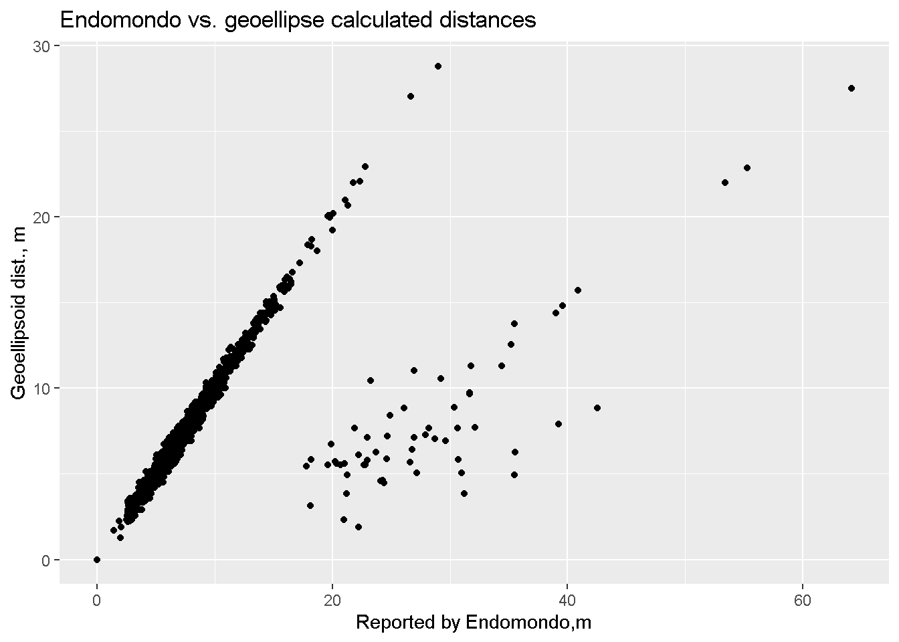
These points are randomly distributed over time so relationship between the cumulative distances (and speeds) is linear.
ggplot(df_tcx1e, aes(x=ds0_m/1000, y=distance_alt))+
geom_point()+
ggtitle("Distance, measured by Endomondo vs. Calculated")+
xlab("Measured by Endomondo, km")+
ylab("Calculated, km")
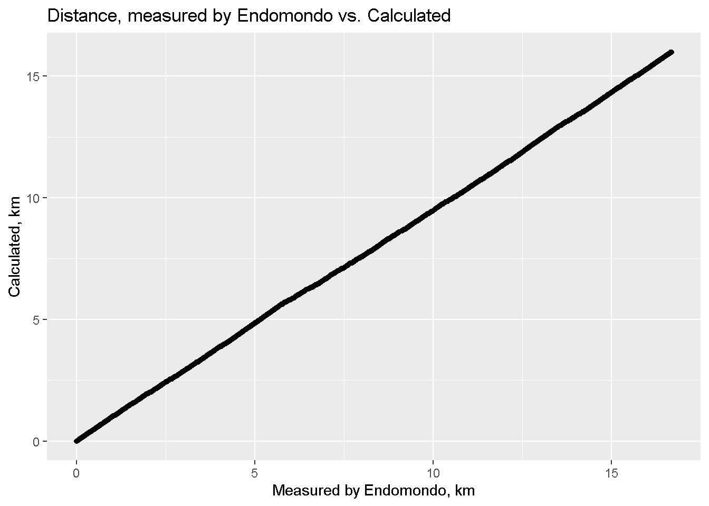
Below I will use speeds and distances computed by myself with an altitude taken into account (but the difference with the flat Earth is small).
Dynamics
5. Let start with the plot of elevation evolution over time. On average it is measured quite good, we see both long lift and descents. There are a lot of fast changes also that are caused by both GPS noise and ravine dives on XC trains.
# Plot elevations and smoother
plot_elevations <- function ( df_in ) {
plot(df_in$cumtime*60, df_in$alt, type = "l", bty = "n", ylab = "Elevation", xlab = "Time, min", col = "grey40")
lines(df_in$cumtime*60, df_in$alt_lowess, col = "red", lwd = 3)
legend(x="bottomright", legend = c("GPS elevation", "LOWESS elevation"),
col = c("grey40", "red"), lwd = c(1,3), bty = "n")
title("Elevation vs. time")
}
plot_elevations(df_tcx1e)
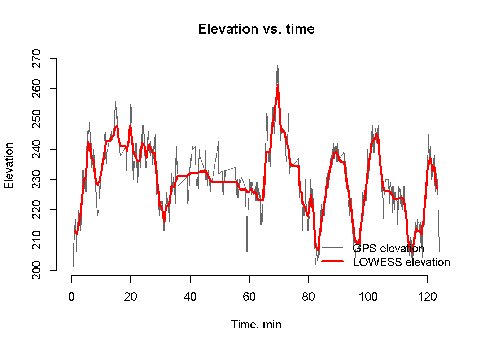
6. Next comes the speed plot. It is possible to plot speed against time or distance. As can be seen I spent a huge part of my training at rest, so the average speed is much smaller than the speed on segments.
plot_speeds_vs_time <- function( df_in ) {
n <- dim(df_in)[2]
plot(df_in$cumtime*60, df_in$speed_kmh_alt, type = "l", bty = "n", ylab = "Speed (km/h)", xlab = "Time, min", col = "grey40", main="Speed vs. Time ")
lines(df_in$cumtime*60, df_in$speed_lowess_alt, col = "blue", lwd = 3)
legend(x="topright", legend = c("GPS speed", "Smoothed speed"),
col = c("grey40", "blue"), lwd = c(1,3), bty = "n")
abline(h = df_in[n, "distance"]/df_in[n,"cumtime"], lty = 2, col = "red")
abline(h = df_in[n, "distance_alt"]/df_in[n,"cumtime"], lty = 2, col = "yellow")
}
plot_speeds_vs_time( df_tcx1e )
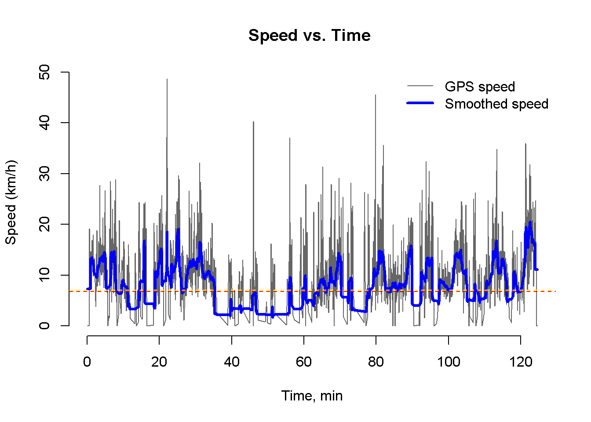
# Plot speeds and smoother
plot_speeds_vs_dist <- function( df_in ) {
n <- dim(df_in)[2]
plot(df_in$distance, df_in$speed_kmh_alt, type = "l", bty = "n", ylab = "Speed (km/h)", xlab = "Distance, km", col = "grey40", main="Speed vs. Distance ")
lines(df_in$distance, df_in$speed_lowess_alt, col = "blue", lwd = 3)
legend(x="topright", legend = c("GPS speed", "Smoothed speed"),
col = c("grey40", "blue"), lwd = c(1,3), bty = "n")
abline(h = df_in[n, "distance"]/df_in[n,"cumtime"], lty = 2, col = "red")
abline(h = df_in[n, "distance_alt"]/df_in[n,"cumtime"], lty = 2, col = "yellow")
}
plot_speeds_vs_dist( df_tcx1e )
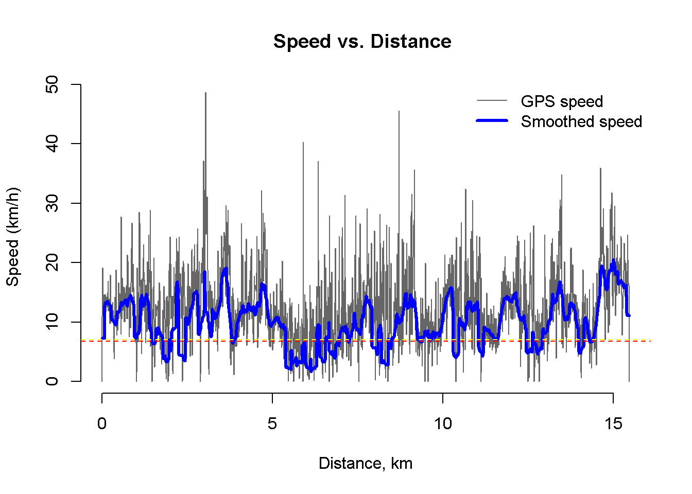
We can also produce histogram of speeds distribution. It is clear that most of the time I spent on technical trails where speed was not very high.
#Speed histogram
hist_speeds <- function ( df_in ) {
hist( df_in$speed_kmh, breaks=50, freq= FALSE, xlab="Speed, km/h", main="Distribution of speeds")
}
hist_speeds( df_tcx1e )
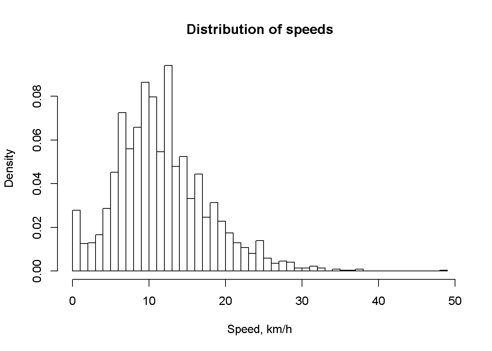
Pulse
7. It is interesting to analyze heart rate during my exercises. I do not always use HR monitor so I will load another track. The method of graphs production is the same.
df_tcx2 <- load_tcx( paste0( data_folder, "20190529_115118.tcx" ))
nopt2 <- opt_nsmooth(df_tcx2)
print( paste0("Optimal smoothing window: ", nopt2))
## [1] "Optimal smoothing window: 48"
df_tcx2e <- calc_spd(df_tcx2)
plot_hr_vs_time <- function( df_in ) {
plot(df_in$cumtime*60, df_in$hr, type = "l", bty = "n", ylab = "HR (bpm)", xlab = "Time, min",
col = "grey40", main="HR vs. Time ")
lines(df_in$cumtime*60, df_in$hr_lowess, col = "blue", lwd = 3)
legend(x="topright", legend = c("HR", "Averaged HR"),
col = c("grey40", "blue"), lwd = c(1,3), bty = "n")
abline(h = mean(df_in$hr), lty = 2, col = "red")
abline(h = mean(df_in$hr_lowess), lty = 2, col = "yellow")
}
plot_hr_vs_time( df_tcx2e )
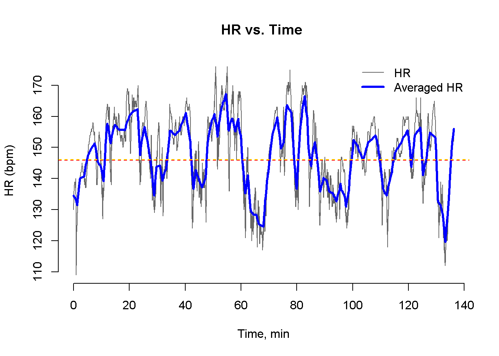
plot_hr_vs_dist <- function( df_in ) {
plot(df_in$distance, df_in$hr, type = "l", bty = "n", ylab = "HR (bpm)", xlab = "Distance, km",
col = "grey40", main="HR vs. Distance ")
lines(df_in$distance, df_in$hr_lowess, col = "blue", lwd = 3)
legend(x="topright", legend = c("HR", "Averaged HR"),
col = c("grey40", "blue"), lwd = c(1,3), bty = "n")
abline(h = mean(df_in$hr), lty = 2, col = "red")
abline(h = mean(df_in$hr_lowess), lty = 2, col = "yellow")
}
plot_hr_vs_dist( df_tcx2e )
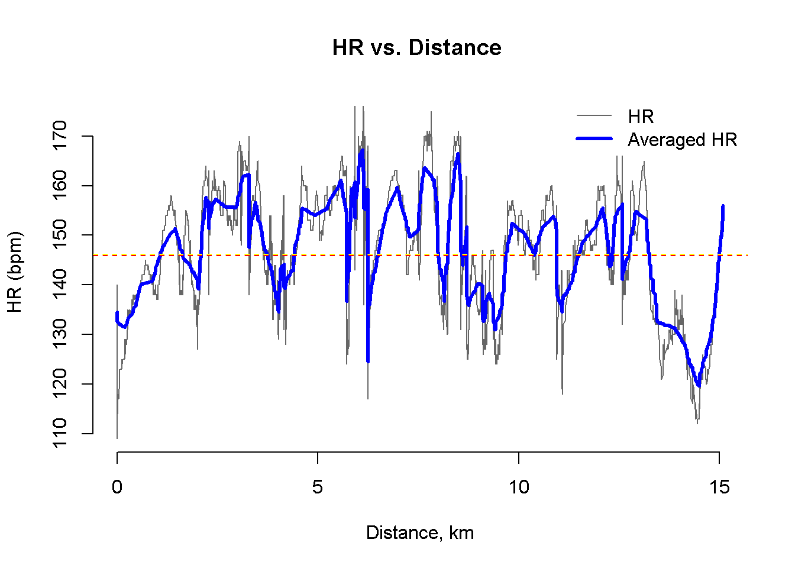
#maximum heart rate for my age
age <- 45
hrmax <- 220 - age
calc_hr_zone <- function(hr, hrmax) {
return( as.integer( floor( ( hr/hrmax - 0.5 ) * 10 ) + 1 ))
}
plot_hr_stat <- function( df_in, hrmax = 175 ) {
x1 <- df_in[ , .(dtsum = sum(dt)), by =.(hr)]
setkey(x1, hr)
gg1<- ggplot(x1, aes(x=hr, y=dtsum/60))+
geom_line(color="red")+
ggtitle("Time spent at given HR")+
geom_smooth(size=1) +
xlab("Heart rate, bmp")+
ylab("Time spent, min")
gg_add_zones <- function(gg1, hrmax) {
for( i in c(2:6)) {
h <- hrmax * (0.4 + i* 0.1)
gg1 <- gg1 + geom_vline(xintercept = h, linetype= "dotted")
}
i <- c(2:5)
df_labels <- data.frame( hr = hrmax * (0.45 + i* 0.1), hr_zone = i )
gg1 <- gg1 + geom_text( data=df_labels, aes( x=hr, 0, label=paste0( "Zone ", hr_zone), hjust = 0.5 ))
}
gg1 <- gg_add_zones( gg1, hrmax )
print(gg1)
gg2<- ggplot(x1, aes(x=hr, y=dtsum/sum(dtsum)))+
geom_line(color="red")+
geom_smooth(size=1) +
ggtitle("Share of time spent at given HR")+
xlab("Heart rate, bmp")+
ylab("Share of time")
gg2 <- gg_add_zones( gg2, hrmax )
print(gg2)
gg3 <- ggplot(x1, aes(x=hr, y=cumsum(dtsum)/sum(dtsum)))+
geom_line(color="red", size=1) +
ggtitle("Share of time spent at HR<x")+
xlab("Heart rate, bmp")+ ylab("Share of time")
gg3 <- gg_add_zones( gg3, hrmax )
print(gg3)
gg4 <- ggplot(x1, aes(x=hr, y=cumsum(dtsum)/60))+
geom_line(color="red", size=1) +
ggtitle("Time spent at HR<x")+
xlab("Heart rate, bmp")+ ylab("Time,min")
gg4 <- gg_add_zones( gg4, hrmax )
print(gg4)
}
plot_hr_stat(df_tcx2e)
## `geom_smooth()` using method = 'loess' and formula 'y ~ x'
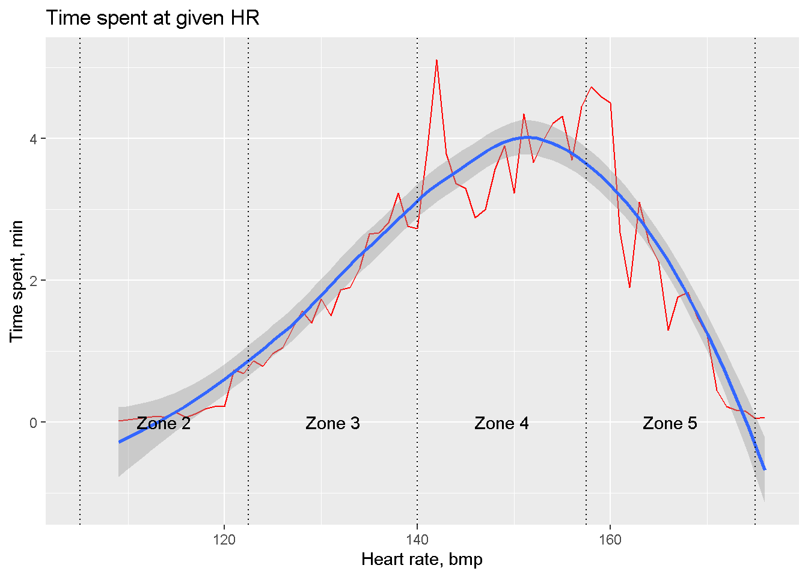
## `geom_smooth()` using method = 'loess' and formula 'y ~ x'
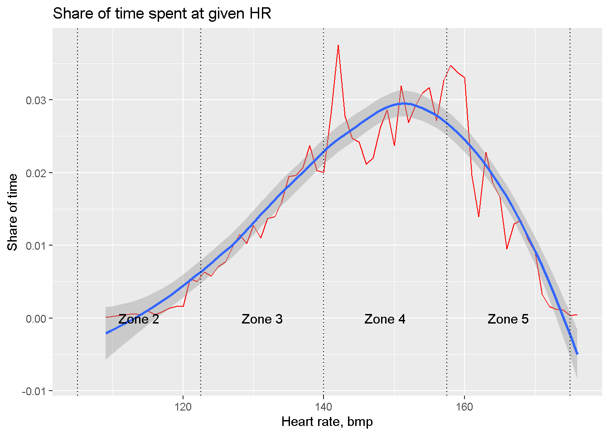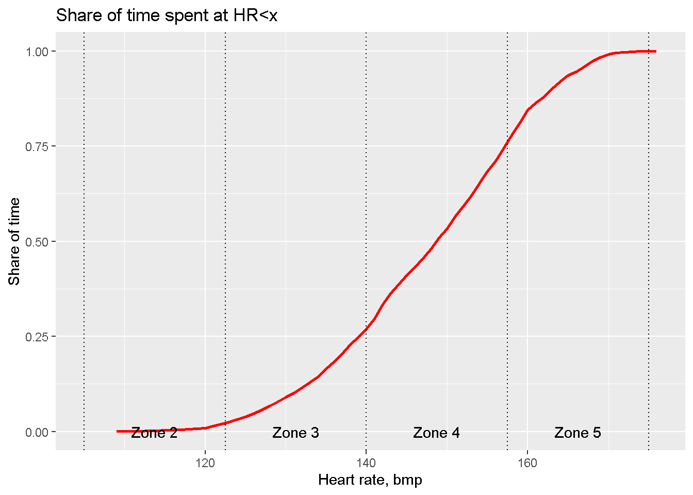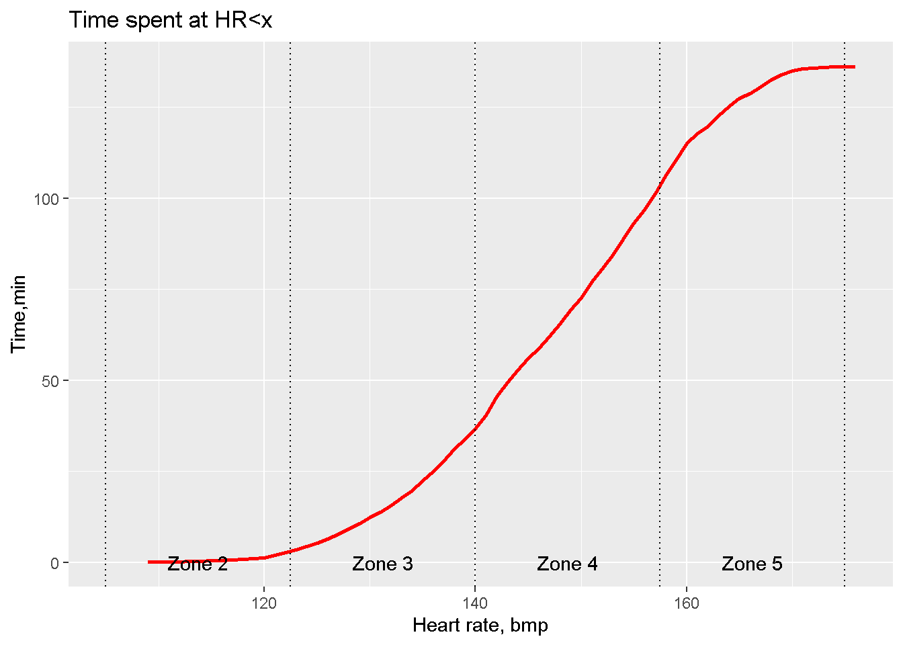
Well, my pulse is high. And the more technical the segment is the higher is the pulse.
Vizualization on Google maps
8. At first we produce the track without any map but with the color of each point to indicate the current speed. The bluer the slower, the redder the higher is the speed.
# Plot the track without any map, the shape of the track is already visible.
plot_track <- function( df_in, maxspeed = 50 ) {
x1 <- df_in$speed_lowess / maxspeed
c1 <- rgb( x1, 0, 1-x1 )
plot(rev(df_in$lon), rev(df_in$lat), col = c1, lwd = 3, bty = "n",
ylab = "Latitude", xlab = "Longitude", pch=20)
}
plot_track( df_tcx1e )
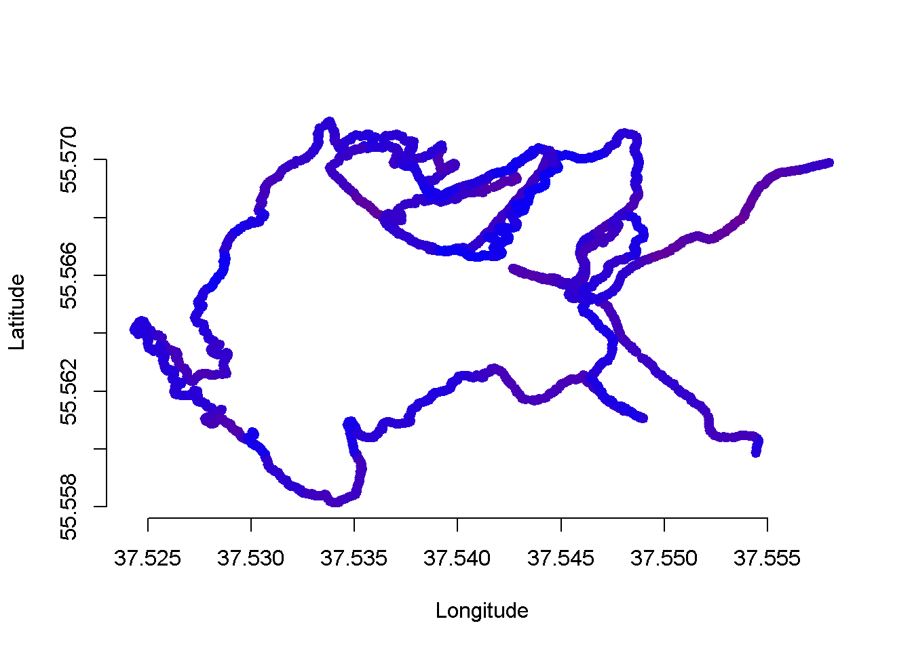
9. Then we will load and plot the data from the Google Maps. To do so we initially compute the box of geo limits of my movements and supply it as the parameter to the function get_map that requests Google services and then call the function ggmap that plots the result. The maximum magnification in the call to ggmap corresponds to zoom=18. The color of points will correspond to the speed averaged over 90 second.
plot_track_on_gmaps <- function( df_in ) {
###Draw track with google maps
# mapImageData1 <- get_map(location = c(lon = mean(df1$lon), lat = mean(df1$lon)),
# color = "color",
# source = "google",
# maptype = "satellite",
# zoom = 11)
sscale = 1
pad1 <- 2e-4
box1 <- c( left= min(df_in$lon, na.rm = TRUE) -pad1,
bottom = min(df_in$lat, na.rm = TRUE)-pad1,
right = max(df_in$lon, na.rm = TRUE) +pad1,
top = max(df_in$lat, na.rm = TRUE) + pad1)
mapImageData1 <- get_map(location = box1,
color = "color",
source = "google",
maptype = "satellite", zoom=12 )
plot1 <- ggmap(mapImageData1, extent = "panel", #"device"
legend="right", padding=0.1, maprange = TRUE) +
labs(y = "Latitude", x = "Longitude") +
geom_path(aes(x = lon, y = lat, color=speed_lowess), data = df_in,
size = 2, show.legend = T) +
theme(legend.position = "right") +
scale_color_gradient(low="blue", high="red")
print( plot1 )
}
plot_track_on_gmaps( df_tcx1e )
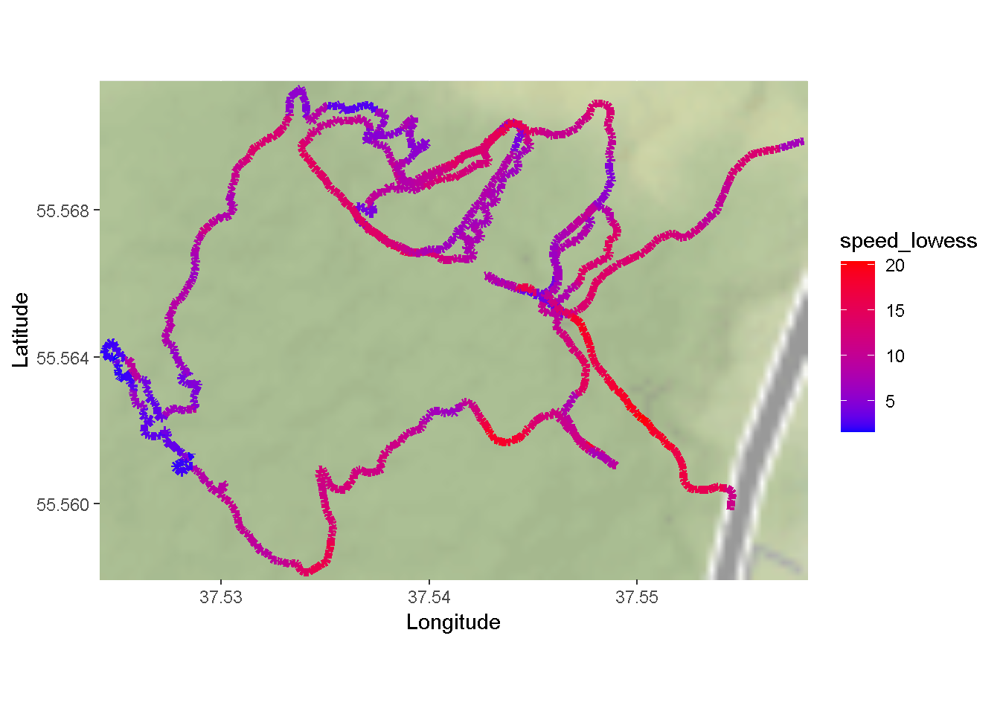
10. Because I am not very good at following predetermined path I am curious to compare the planned path with the fact.
df_plan <- load_gpx( paste0( data_folder, "138pop_2019_by_rockfox.gpx" ))
plot_fact_vs_plan_on_gmaps <- function( df_in, df_plan ) {
###Draw track with google maps
# mapImageData1 <- get_map(location = c(lon = mean(df1$lon), lat = mean(df1$lon)),
# color = "color",
# source = "google",
# maptype = "satellite",
# zoom = 11)
sscale = 1
pad1 <- 2e-4
box1 <- c( left= min(df_in$lon, df_plan$lon, na.rm = TRUE) -pad1,
bottom = min(df_in$lat, df_plan$lat, na.rm = TRUE)-pad1,
right = max(df_in$lon, df_plan$lon, na.rm = TRUE) +pad1,
top = max(df_in$lat, df_plan$lat, na.rm = TRUE) + pad1)
mapImageData1 <- get_map(location = box1,
color = "color",
source = "google",
maptype = "satellite", zoom=12 )
plot1 <- ggmap(mapImageData1, extent = "panel", #"device"
legend="right", padding=0.1, maprange = TRUE) +
labs(y = "Latitude", x = "Longitude") +
geom_path(aes(x = lon, y = lat, color=speed_lowess), data = df_in,
size = 1, pch = 20, show.legend = T) +
geom_path(aes(x = lon, y = lat), data = df_plan,
size = 1, pch = 20, show.legend = T, , color="yellow") +
theme(legend.position = "right") +
scale_color_gradient(low="blue", high="red")
print( plot1 )
}
plot_fact_vs_plan_on_gmaps(df_tcx1e, df_plan)
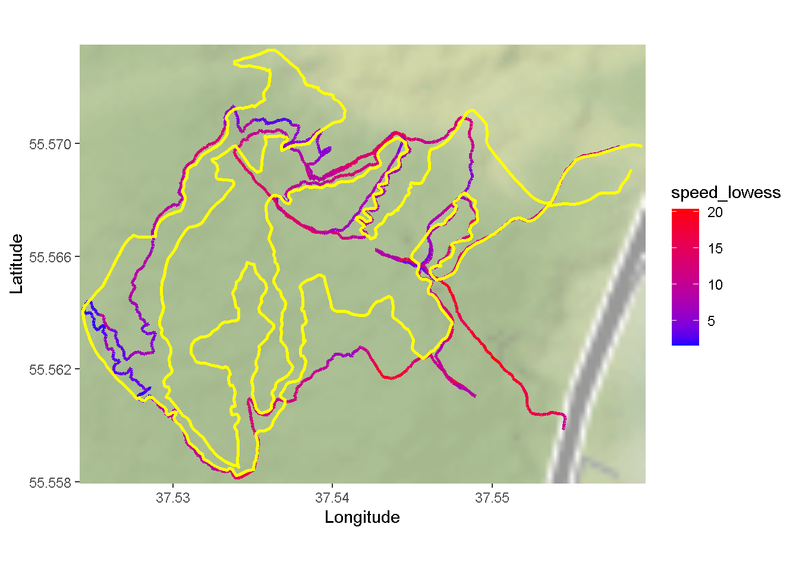
The difference is quite noticeable. I planned to ride on the easy green trails but happened to storm more difficult red ones.
The same way we plot plot the heart rate.
plot_hr_on_ggmap <- function( df_in ) {
sscale = 1
pad1 <- 2e-4
box1 <- c( left= min(df_in$lon, na.rm = TRUE) -pad1,
bottom = min(df_in$lat, na.rm = TRUE)-pad1,
right = max(df_in$lon, na.rm = TRUE) +pad1,
top = max(df_in$lat, na.rm = TRUE) + pad1)
mapImageData1 <- get_map(location = box1,
color = "color",
source = "google",
maptype = "satellite", zoom=12 )
ggmap(mapImageData1, extent = "panel", #"device"
legend="right", padding=0.1, maprange = TRUE) +
labs(y = "Latitude", x = "Longitude") +
geom_path(aes(x = lon, y = lat, color=hr_lowess), data = df_in,
size = 2, show.legend = T) +
theme(legend.position = "right") +
scale_color_gradient(low="blue", high="red") +
ggtitle("Pulse rate along the track")
}
plot_hr_on_ggmap(df_tcx2e)
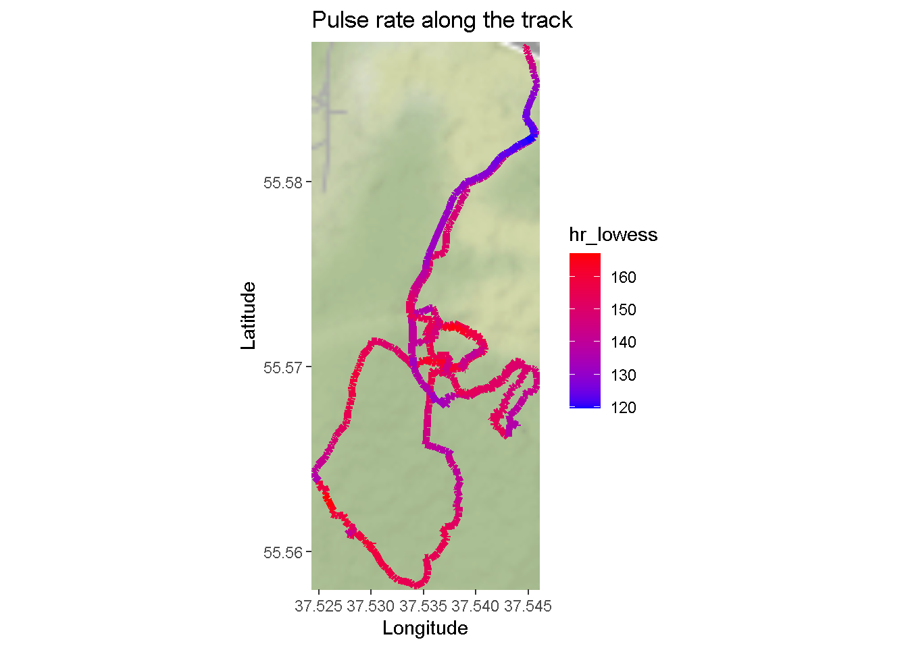
11. It is also possible to plot the HR zones right on the map. The harder the trail the higher the pulse.
df_tcx2e[, hr_zone := calc_hr_zone(hr, hrmax)]
plot_hrzone_on_ggmap <- function( df_in ) {
sscale = 1
pad1 <- 2e-4
box1 <- list( left= min(df_in$lon, na.rm = TRUE),
bottom = min(df_in$lat, na.rm = TRUE),
right = max(df_in$lon, na.rm = TRUE),
top = max(df_in$lat, na.rm = TRUE))
dx <- abs( (box1$right - box1$left)/10)
dy <- abs( (box1$top - box1$bottom)/10)
box1$left <- box1$left - dx
box1$right <- box1$right + dx
box1$top <- box1$top + dy
box1$bottom <- box1$bottom - dx
mapImageData1 <- get_map(location = unlist(box1),
color = "color",
source = "google",
maptype = "satellite", zoom=12 )
ggmap(mapImageData1, extent = "panel", #"device"
legend="right", padding=0.1, maprange = TRUE) +
labs(y = "Latitude", x = "Longitude") +
geom_point(aes(x = lon, y = lat,
color=as.factor(hr_zone)), data = na.omit(df_in[,.(lon,lat,hr_zone)]),
size = 2, show.legend = T) +
theme(legend.position = "right") +
ggtitle("Pulse zones on the track") +
scale_color_discrete(name="HR Zone")
}
plot_hrzone_on_ggmap(df_tcx2e)
## Scale for 'x' is already present. Adding another scale for 'x', which will
## replace the existing scale.
## Scale for 'y' is already present. Adding another scale for 'y', which will
## replace the existing scale.
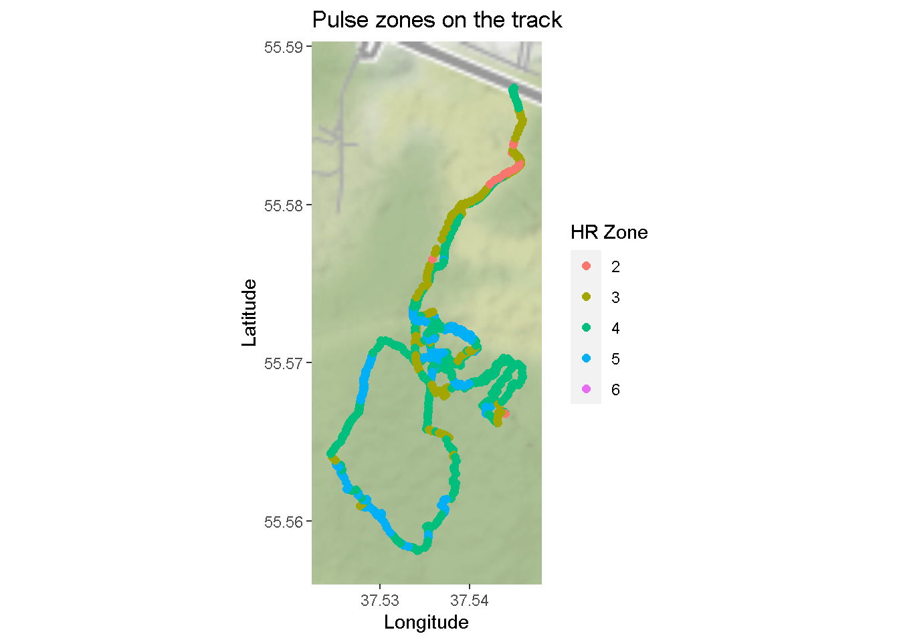
Note that the “sixth HR zone” emerged because I trained with pulse higher than theoretical limit for my age.
Author Vladislav Borkus
LastMod 2021-03-22
License (C) Vladislav Borkus